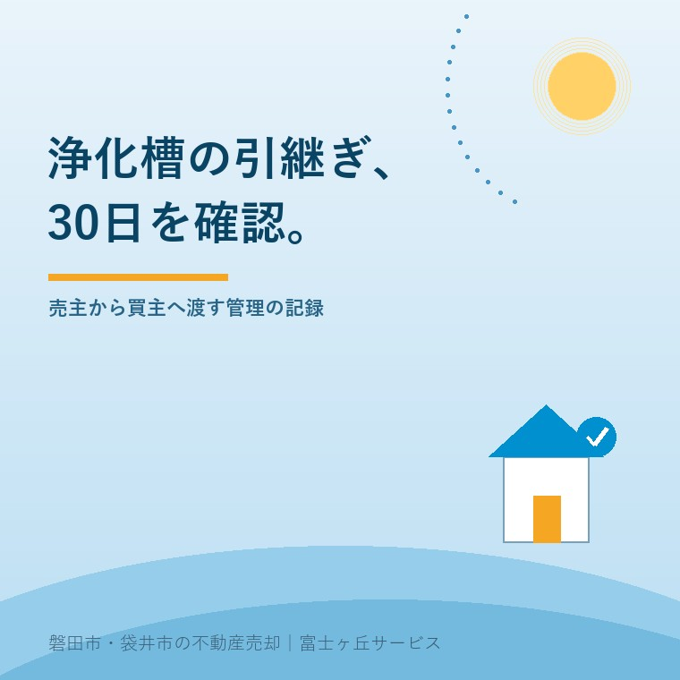
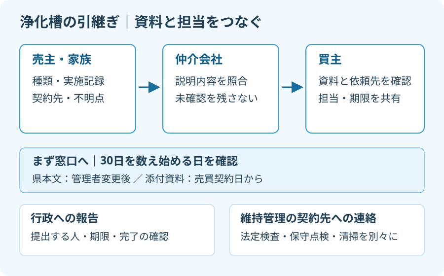

空き家売却の浄化槽、管理者変更は30日以内
2026年10月1日｜カテゴリ：空き家・施設入居

この記事の要点
浄化槽のある実家を売ったら、管理の手続きは買主に任せていい？
浄化槽管理者変更報告書は、静岡県の案内本文では管理者変更後30日以内です。売主は種類・点検等の記録と契約先を渡し、提出担当と期限を確認します。添付資料は契約日起算のため、日付が異なる案件は窓口確認が必要です。磐田市・袋井市・森町では、介護施設の運営から不動産事業を始めた富士ヶ丘サービスのような地域密着の会社に相談する選択肢があります。
大石浩之（磐田市／不動産業）です。空き家を売るとき、鍵や残置物の引継ぎは目に入ります。地中の浄化槽は、買主が使い始めてから管理の連絡先を探す状態にしないよう、売主側の記録を先にそろえます。
本記事は2026年10月1日確認の公式情報に基づき、買主への説明と管理者変更の引継ぎに絞ります。浄化槽の交換工事や下水道への接続費用を決める記事ではありません。空き家でも、管理の記録は売却資料の一部です。
10月1日は浄化槽の引継ぎを見直す日
環境省「浄化槽イベント」によると、毎年10月1日は浄化槽の日です。1985年10月1日の浄化槽法全面施行を記念し、1987年に設けられました。2026年10月1日から新しい売却手続きが始まる、という意味ではありません。
静岡県は住宅販売業者向けの案内で、浄化槽の維持管理について契約者に説明するよう求めています。案内本文は、保守点検・清掃・法定検査を別々の義務として示しています。保守点検は定期的なメンテナンス、清掃は汚泥などを取り除く作業です。
法定検査は、浄化槽の状態を法律に基づいて確認する検査です。「業者が来ていた」という記憶だけでは、何を実施したのかまでは特定できません。点検の領収書があっても、清掃や法定検査の記録はそれぞれ探します。
私は、県が住宅取引向けのチェックリストを用意した点を評価します。浄化槽の種類から維持管理の契約まで、説明する項目を家族と仲介会社が同じ紙で確認できます。設備に詳しくない売主でも、足りない情報を示せるのが利点です。
その上で、チェック欄に印を付けるだけで終えない説明を仲介会社に求めたい。誰が記録を確認し、買主のどの質問が残っているかまで追う必要があります。資料がない欄を、異常なしという意味の印で埋めてはいけません。
売主が仲介会社へ渡す4組の情報
浄化槽付きの空き家を売る家族には、設備の種類、実施記録、契約先、未確認事項の4組に資料を分ける方法を私は提案します。これは売却準備のための私の整理法で、行政が指定する添付書類の一覧ではありません。
| 情報の組 | 売主が探すもの | 買主に伝える内容 |
|---|---|---|
| 設備の種類 | 設置時の資料、型式等の記載 | 合併処理か単独処理か、確認根拠 |
| 実施記録 | 保守点検・清掃・法定検査の記録 | 実施日、指摘事項、対応の有無 |
| 契約先 | 契約書、請求書、連絡先 | 契約者、依頼先、次の予定 |
| 未確認事項 | 家族の聞き取りメモ | 記録がない期間、不具合の認識 |
県のチェックリストは、合併処理と単独処理を分けています。合併処理はトイレと台所・浴室などの排水を扱い、単独処理はトイレの排水を扱います。家族が「浄化槽」と呼んでいるだけでは、買主が設備の内容を判断できません。
種類が分からなければ、分からないと書いて資料や業者の確認につなげます。マンホールの数や見た目だけで決めつけないことです。排水設備の違いを整理する際は、下水道への接続と浄化槽を確認する記事も参照してください。
私なら、記録の表紙だけでなく、指摘事項が載ったページも仲介会社へ渡します。修理したと聞いていても、日付や作業内容が分からなければ「家族からの聞き取り」と区別します。買主に伝える言葉を、記録の範囲より広げないためです。
設備の不具合をどう説明し、契約にどう反映するかは、契約不適合責任と売主の説明にも関わります。資料がないことと不具合がないことは別です。設備の説明や契約の個別判断は専門家に確認を。

30日の起算日は、契約前に照会する
浄化槽管理者変更報告書の提出時期について、静岡県の案内本文は管理者変更後30日以内としています。一方、同じページの添付チェックリストは、中古物件の浄化槽を引き継ぐ場合などを売買契約日から30日以内と記載しています。
同じ県の資料でも、30日を数え始める日の表現が違う。ここは読み飛ばせません。売買契約を結ぶ日と、代金決済・所有権移転・鍵の引渡しをする日が異なる予定なら、どの日を記載するのかを窓口に確認する必要があります。
私は、資料の差を見て「たぶん引渡日からでよい」とは案内しません。どの日が管理者の変更日に当たるかを、記事だけで決めることはできないからです。本記事では個別案件の起算日について、窓口の回答は得ていません。
県のチェックリストで、磐田市・袋井市の提出先は西部健康福祉センター環境課です。連絡先は0538-37-2250と記載されています。照会時には物件の所在地、現在の管理者、契約日、所有権移転日、管理を引き継ぐ予定日を整理して伝えます。
質問は「30日はいつからですか」だけにしない方が伝わります。予定日を並べ、どの日を変更日として記載するか、誰がどの方法で提出するかを聞く。回答日と回答内容を仲介会社へ共有するところまでが、私の勧める準備です。
県ページの更新日は2026年8月13日ですが、届出制度の改正日とは扱いません。日付の表示と制度の開始を結び付けず、いま参照できる本文と添付資料の差を確認事項として残します。
誰がいつ届けるか、引渡し確認表に残す
浄化槽の引継ぎでは、行政への報告と、維持管理の依頼先への連絡を分けて予定を立てます。県のチェックリストも、管理者変更報告書と法定検査・保守点検・清掃の契約を別の項目として扱っています。
私はこう考えます。名義の紙を渡しただけで、浄化槽の引継ぎを終わりにしない。買主が誰に点検を頼むのかも分からないままでは、引渡し後の問い合わせが売主の家族へ戻ってきます。誰がいつ動くかまで書くことが、家族の負担を減らします。
私にも迷うのは、売主の支出を抑えながら、引渡し前にどこまで確認を済ませるかです。記録を見ずに清掃や修理を一律に追加する案内はしません。前回の実施内容と指摘事項を業者に見てもらい、必要な作業と費用負担を契約前に整理する方を選びます。
仲介会社には、報告書を準備する人、窓口へ提出する人、完了を確かめる人を記入してもらいます。業者に代行を依頼する場合も、どこまでが依頼内容かを確認します。「誰かがやるはず」という空欄を残さないのが狙いです。
提出後は控えや送付記録など、提出方法に応じた確認材料を共有します。買主が新しく契約する場合には、売主側の契約終了と買主側の依頼開始をそれぞれ確かめます。報告書を出しただけで業者との契約まで切り替わったと決めつけません。
書類を残置物と一緒に処分してしまうと、後から連絡先を探す手間が増えます。残置物と現況での引渡しを整理するときにも、浄化槽のファイルは買主へ渡す資料として別に保管してください。
磐田・袋井で今日できるのは記録探し
磐田市・袋井市の実家が施設入居などで空いている家族は、まず浄化槽関係の封筒や領収書を一か所へ集めてください。売却を決める前でも、契約先と記録の所在が分かれば、仲介会社への質問を具体化できます。
- 種類と維持管理の記録を集め、不明欄を残す。
- 契約日と管理を引き継ぐ予定日を並べ、窓口へ照会する。
- 買主への説明、届出、業者への連絡の担当を分けて記す。
私は、売るかどうかの結論を急がせるより、買主へ何を渡せるかを先に確認します。富士ヶ丘サービスでは、介護と不動産を一体で相談し、磐田・袋井の家族が困らない売却の段取りを整理します。設備説明や契約、税務・登記・相続の個別判断は専門家に確認を。
よくある質問
売却準備と手続きの疑問を整理します。
- 管理者変更は引渡日から30日以内ですか？
- 静岡県の案内本文は管理者変更後30日以内、添付チェックリストは売買契約日から30日以内と記載しています。引渡日を一律に起算日と決めず、契約日・所有権移転日・管理を引き継ぐ予定日を西部健康福祉センター環境課に伝えて確認してください。仲介会社にも回答を共有し、届出担当と期限を記録します。
- 保守点検業者に連絡すれば届出も終わりますか？
- 保守点検契約の連絡と、行政への浄化槽管理者変更報告書の提出は別の確認項目です。業者が何を対応するかは契約内容を確認し、代行を頼む場合も提出先・期限・完了を確かめる方法を決めてください。法定検査と清掃の連絡先も分けて整理し、買主が次回の依頼先を説明できる状態まで引き継ぐことを勧めます。
- 浄化槽の種類や点検記録が分からない場合は？
- 分からない項目は不明と記して仲介会社へ渡し、手元の領収書や契約書から業者を探します。マンホールの外見だけで種類を断定せず、業者の資料や現地確認につなげてください。記録がないことを正常という意味で買主に伝えないようにし、確認担当と回答予定を残します。設備説明や契約の個別判断は専門家に確認を。

この記事を書いた人：大石浩之（磐田市／不動産業・宅地建物取引士）
富士ヶ丘サービス株式会社。介護施設の運営から不動産事業を始め、磐田市・袋井市・森町で、介護と相続、実家の売却を一体で相談できる窓口を設けています。家族が困らない売却のため、資料と現地の条件を一件ずつ整理します。著者プロフィール
本記事は2026年10月1日時点の公開情報と筆者の意見です。制度・数値・手続き・契約条件は変更されることがあります。税務・登記・相続・重要事項説明・契約などの個別判断は、税理士・司法書士・土地家屋調査士・弁護士などの専門家に確認を。